November 10, 2026
This week I relearned KiCAD. I hadn't used it since 2024 in my audio projects class with Tim Hoerning during my senior year at Cooper in 2024, and it was while I was permanent war economy levels of stress so I didn't retain anything. I think I actually picked up a lot of PCB design knowledge while working at Frontier Audio Labs and working directly with the electrical engineer Jasper Webb.
My goal this week was to fully design and order the sine wave LED display. I used ChatGPT to help me through the learning process. The feedback loop of trying in earnest and failing at a task, asking a very specific and tailored question, and getting an equally specific correct answer, and then solving the problem and moving on and repeating, is extremely powerful and let me learn really learn KiCAD at a deep level. It requires a lot of self-discipline though. I could have let ChatGPT choose all my components for me. It's a relatively simple board and I think ChatGPT could have designed the entire board on its own with an MCP server. But working through this project with the intent turned ChatGPT into a tool rather than a crutch.
First the schematic. I'm using the WS2812B-2020-V6 LED. I'm not sure exactly which WS2812B model is used in Adafruit's Neopixels, but Reddit recommended these for their low power consumption. These require a filter capacitor between power and ground, and the digital signal with the address of each LED and its color is daisy-chained along. The '2020' in the LED name refers to its 2mmx2mm package, which lets me cram a lot of them together (41 in this iteration!) and hopefully make a more continuous-looking ligh source, especially with the help of some diffuser material, which I will experiment with once this PCB is done.
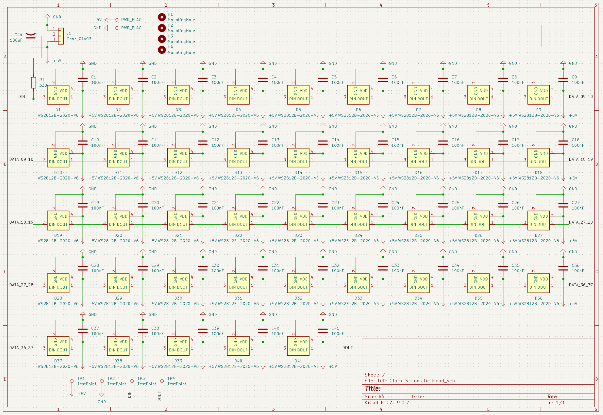
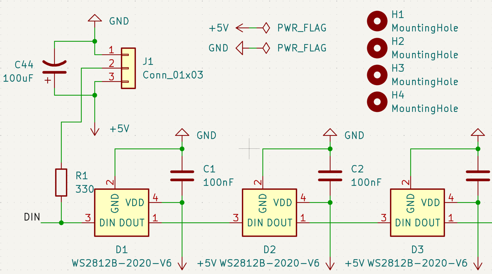
Now for the PCB. For designing the shape of the PCB, KiCAD is very lacking in 2D design tools. Instead, I sketched the PCB in FreeCAD and imported it into KiCAD. I think this is pretty vital when designing anything more complicated than a rectangle. KiCAD lets you align everything on the board with coordinates (and JLCPCB requires a list of this information too) so if all else fails you can do math to figure out where everything goes.
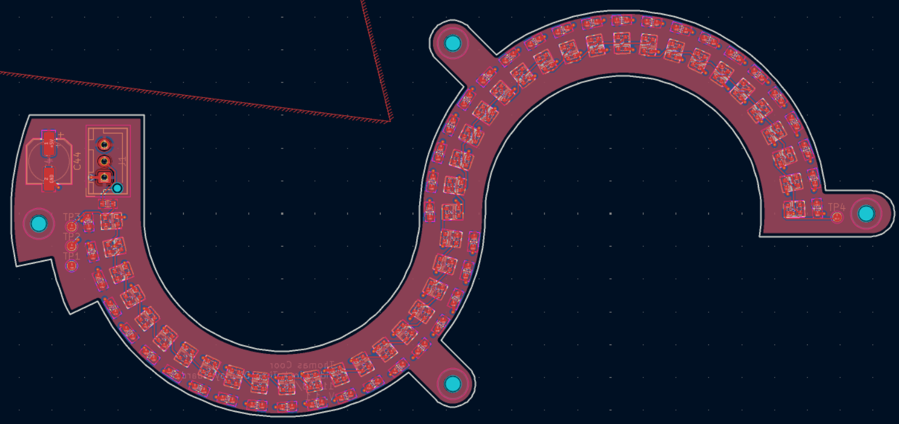
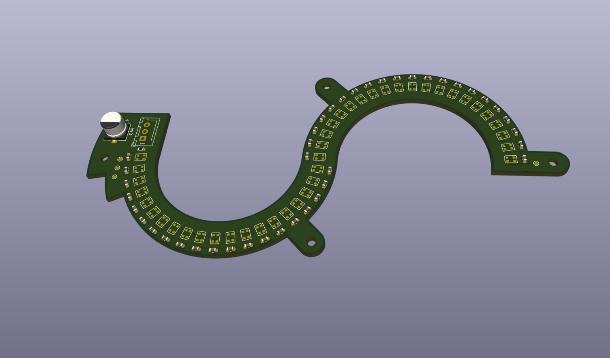
The board is only 2 layers, with the bottom layer a ground plane and the top layer being a 5V plane, along with the digital signal. Again, it's extremely simple. The complex part is the number of components. I'm not sure which part to be concerned about, but I've added a few test points to debug along the way. The PCB is ordered (minimum order of 5 ugh) and will be here in like 10 days.
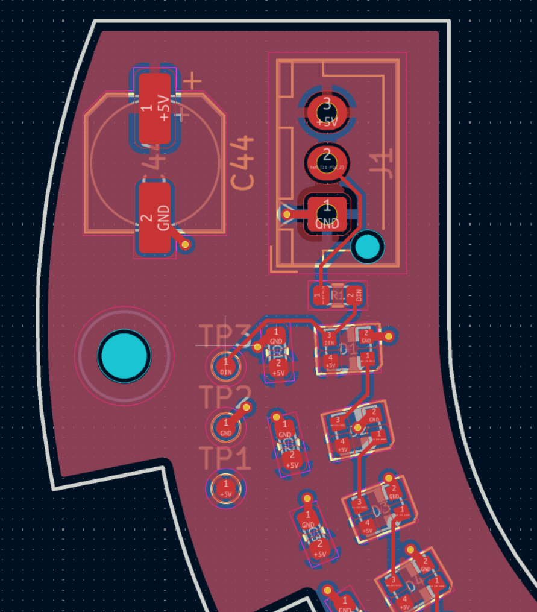
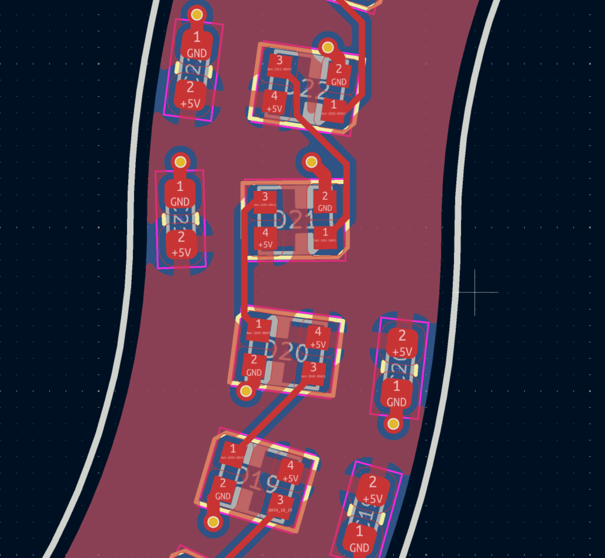
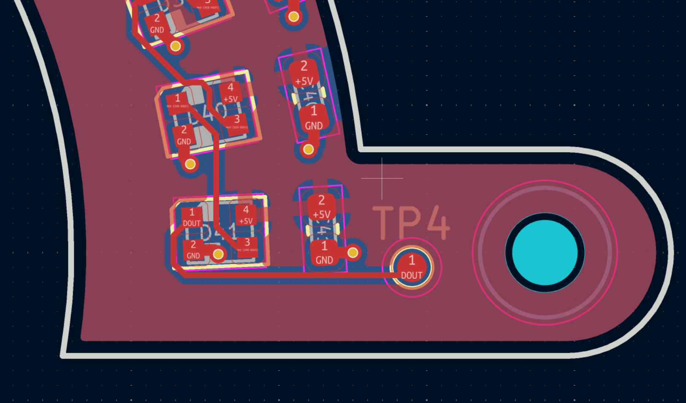
November 2, 2026
I ordered and received the clockwork pieces from JLC3DP. These gears are super tiny and gorgeous! If you've read my other blogs you'll know how much I love the workflow of downloading .STEP files from McMaster-Carr, modifying their geometry for my application, and then printing them out of resin. I printed the plates in PLA, but I'll lasercut aluminum for the final product. So far the parts that should slide are stiff and the parts that should be stiff are sliding, but this is a really good first pass. I need to get my motor controller before I can test this properly.
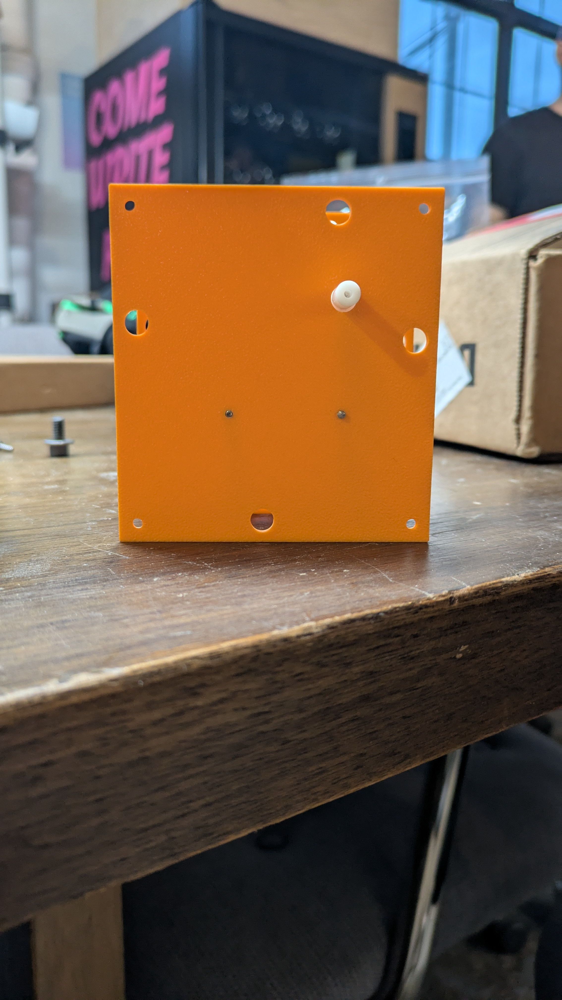
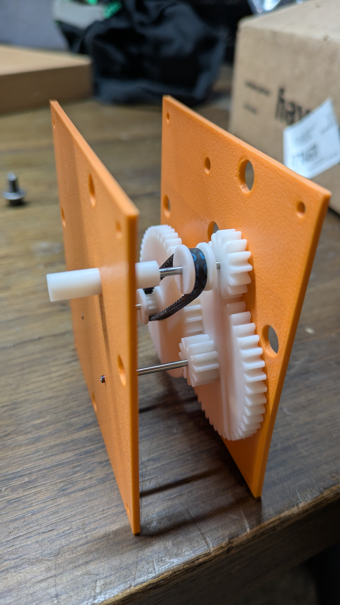
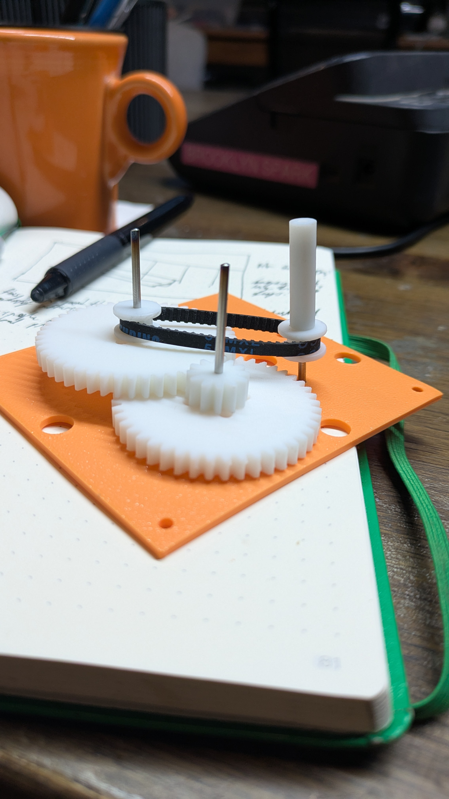
A big headache for me is the axles. I want the clockwork to be fully repairable, meaning I can take gears and pulleys off of their axles to replace them. This means no glue. This usually means I need to use axle hubs with set screws and axles with D-shafts cut into them. This is what I used on the Lorentz Violin and current Chord Organ prototype. However the smallest axle I could find with a D-shaft was 5mm in diameter, and I couldn't make that work with my smallest gears. I chose 2mm diameter axles instead, and designed a little device to hold the axles while I cut a D-shaft into them using a file. This actually kind of worked but was super tedious and I need to keep moving on with the project. I don't need to figure that part out now and need to be ok with leaving that for later.
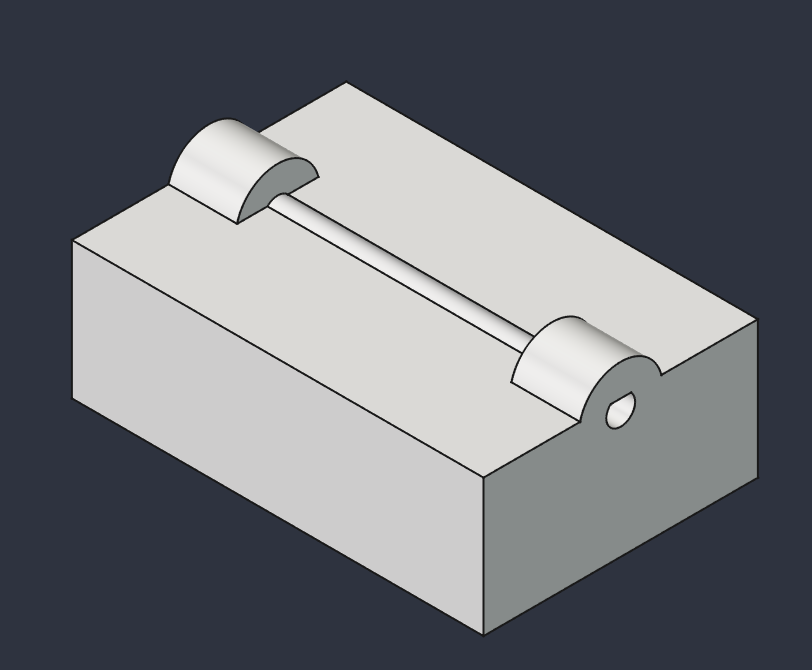
October 24, 2026
I spent literally all of this week designing the clockwork mechanism because I was super unsure of how that would work. I'm honestly super happy with it. Let me back up and talk about the user interaction with the tide clock because I've never explained that part. I want the tide clock to be super low power and not produce any light or sound at night while people are sleeping in the main cabin, so the device will be in a sleep mode until the user presses a button on the face. A Raspberry Pi Pico 2 turns on this GPS module from Adafruit, which according to the datasheet will take roughly 30 seconds to start outputting useful position data. Once the Pico receives data, it uses its lattitude to calculate an estimate for the tides at its location and uses that to calculate the next tide times. It then turns on the LED displays and tells the stepper motors on the clocks where to turn to. Perhaps the device turns itself on at the end of each tide cycle (excpet at night) to update itself so the user doesn't have to wait around for the device to wake up. But these are software changes that can come later.
Anyway, I'm using a very cheap and small stepper motor also from Adafruit. It has 516.096 steps per rotation, which means that I can couple it directly to the minute hand which of course only requires 60 steps per rotation. Because the minute hand performs 12 rotations for each rotation of the hour hand, I can use a 12:1 compound gear train to get the hour hand's rotation. The trickiest part is that the minute and hour hands are coaxial, which meant that I had to design two axles that fit over each other that moved independently. I'm still not sure what the hands will look like.
Clockwork Design
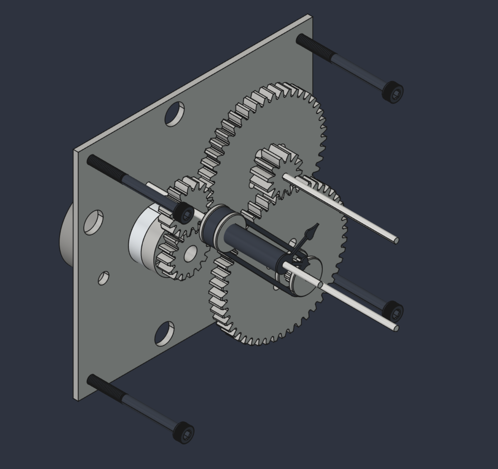
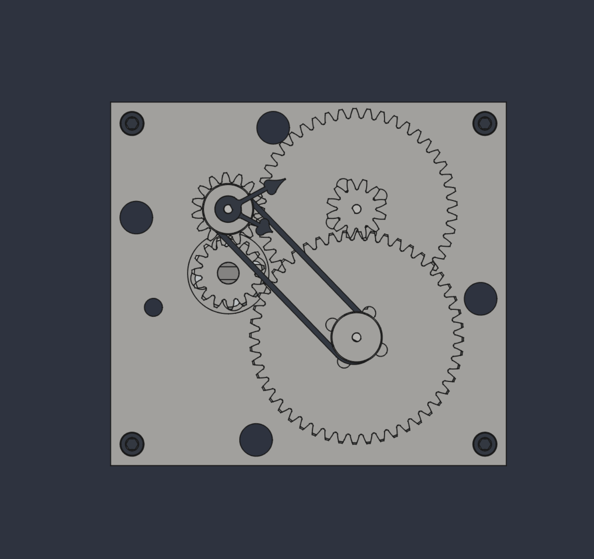
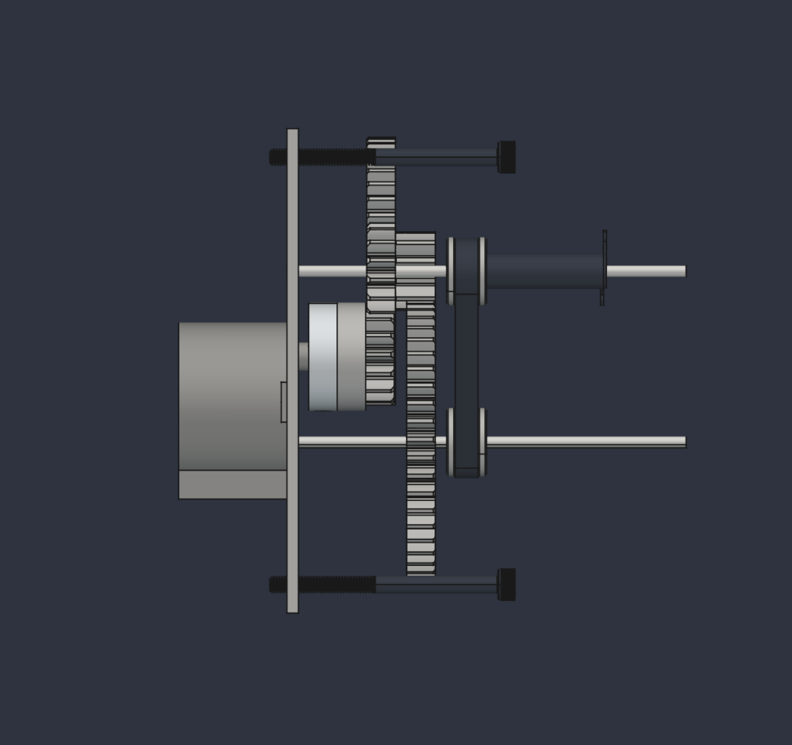
October 15, 2026
So while I was lasercutting the top plate of my Chord Organ, I decided to experiment with lasercutting the Hudson River in the same material. So it did cut, but it took like 3 passes. I was cutting 1/8" plywood, and most of the river is much narrower than that at this scale, so when I hold it up to the light at an angle I don't see much coming through. I think I'll have to use a much thinner piece of wood. Someone even suggested I use wood veneer and don't lasercut it, instead having a Hudson River-shape lightpipe that glows through the wood itself like skin. Preparing the cut wasn't so bad since I found a source online for a very high resolution vector file of the Hudson River (excluding tributaries) and the whole Connecticut-New York-North New Jersey coastline.
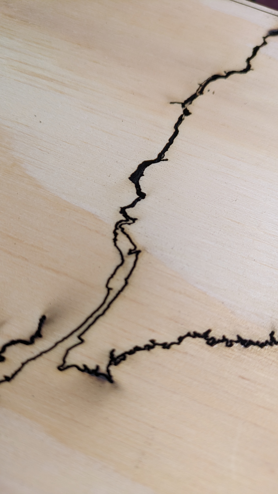
October 12, 2026
I have a rough 3D sketch of the enclosure. You can see the wooden box (~15 inches wide) with two clock faces poking out, and the wavey LED display snaking between them. To the right of that is this cutout for what will eventually be the backlit cutout of the Hudson River, but I'm not going to waste time figuring out how to import that yet. I really want to keep this project as
Enclosure Design
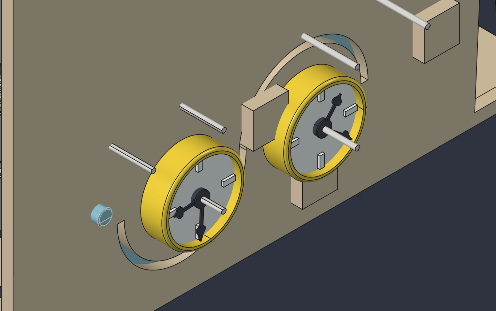
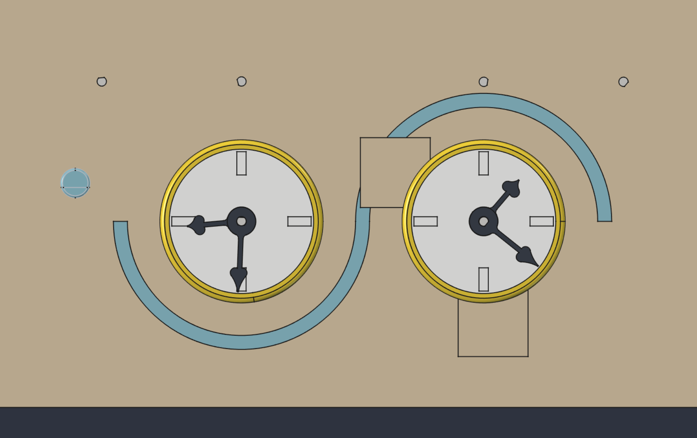
October 3, 2026
New project alert! This is going to be a clock that displays the time of the next high and low tides. My goal is to build this for the ship I worked on this Summer, the Sloop Clearwater, which travels up and down the Hudson River. It will be built into a wooden wall-mounted box with two clock faces displaying the times. There will be two LED displays. The first is a backlit sine-wave pattern that weaves around the clock faces and fills from left to right to show the progression through the tide cycle. The other LED display is a backlit profile of the Hudson River, with the current position of the ship highlighed on the display.
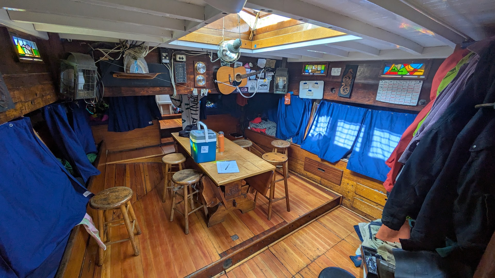
Background
So why would this be useful to the crew of the Sloop Clearwater? Don't they mostly sail on a river? Well, tides on the Hudson River reach all the way up to Albany. The Hudson River is a fjord, meaning it was largely carved by glaciers rather than river erosion, and for this reason has an extremely shallow grade. In fact, the Hudson River alongside Albany is still at 0 feet above sea level! Its shallowness allows tides to pull water up the river. The indigenous peoples of the region called the Hudson River Mahicannituck, or "The river that flows both ways." You don't even really need propulsion to navigate the Hudson River; if you want to head upriver, then you simply untie yourself right as low tide is reached, and then the river switches directions and begins to flood. Mariners can time their departures to travel along the river faster, or to use less fuel.
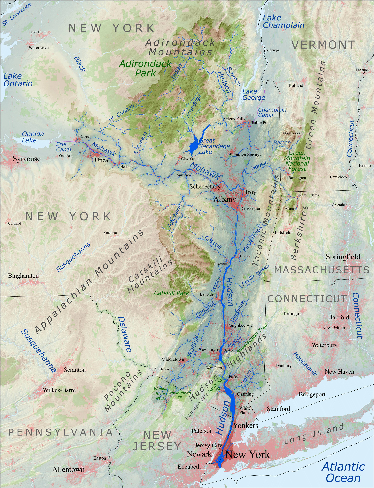
The times of low and high tides in each Hudson River town varies with distance from the river mouth, as the tide water travels upriver. The Hell Gate area, the intersection of the East River, Harlem River, and Long Island Sound by the Triboro Bridge, is infamous for its wild tides and currents, as the various delayed tides of the New York harbor, Hudson River, and Long Island Sound meet. Right now if the Sloop Clearwater crew wants to know the time of the next tides they either use a tide chart, which is a big lookup table that looks like a phone book, or check their phone. One of these methods is more tedious than the other and therefore never used in my time aboard. We definitely all had phones on board but often not on our bodies, and it would be great to find a replacement for phone use while on board. My intent is not to build a tool of convenience and efficiency; things like that are very much against the culture of the Sloop. I want to build an artifact that:
- Tells the user the time of the next high and low tides for where they are in the river
- Blends in well with the design and feel of the Sloop Clearwater's main cabin
- Is rugged enough to withstand the marine environment
- Is extremely serviceable, if it is damaged or the tide predictor must be updated
- Is super low power and directly compatible with the ship's 12V system
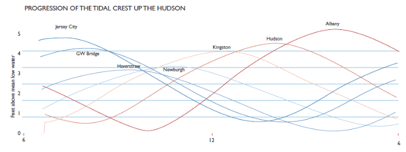
The clock faces display the next high and low tide times. LEDs fill along the sine wave as the day progresses, reaching the high and low points at the corresponding tide times. Whether those times will be calculated or fetched from a lookup table is still to be decided.
The back of the box will remain open for engineering access and debugging, with a small display showing the current date and time. I think this display will be important for checking the tide calculator's accuracy and give skeptics the confidence to trust the device.